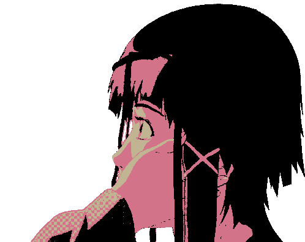

domitori's home
my github
my steam
my twitter
if you wanna contact me, do it on discord (.domitori) or dom1torii@proton.me.
on twitter i will probably answer too.
no matter where you go, everyone's connected.



inspired by cameronsworld.net